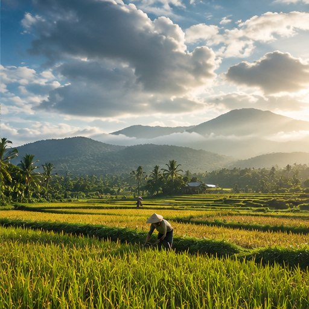

Sasaran pengguna
Pelajar, mahasiswa, komunitas kampus, dan masyarakat umum yang ingin mengenal isu perubahan iklim.
06 / TENTANG IKLIMARA
Kenali tujuan website, kaitannya dengan SDG 13, serta sumber ilmiah dan lembaga yang menjadi rujukan materi halaman lainnya.
Jelajahi materi ↘
TENTANG PROYEK
Iklimara adalah website edukasi mengenai perubahan iklim yang dirancang untuk membantu pembaca memahami konsep dasar, penyebab dan jejak karbon, dampak, mitigasi, serta adaptasi dan aksi iklim.
Tujuan website adalah menyajikan materi secara bertahap dengan bahasa yang mudah dipahami, mendorong pembaca memeriksa sumber informasi, dan menghubungkan pengetahuan dengan tindakan yang realistis.
Pelajar, mahasiswa, komunitas kampus, dan masyarakat umum yang ingin mengenal isu perubahan iklim.
Materi mendukung pemahaman dan kesadaran mengenai aksi iklim, mitigasi, adaptasi, dan kesiapsiagaan menghadapi dampak.
United Nations — Goal 13 ↗Identitas anggota kelompok dan pembagian tugas dapat ditambahkan pada bagian ini sesuai data resmi kelompok.
DAFTAR PUSTAKA
Gunakan sumber berikut untuk membaca informasi lebih lanjut. Tautan mengarah ke situs penerbit atau lembaga terkait.
Angka statistik di dalam materi mengikuti tahun, satuan, dan metode sumber masing-masing. Jangan membandingkan angka lintas sumber tanpa memeriksa definisinya.
RUJUKAN TAMBAHAN DARI DOKUMEN
Referensi berikut mendukung data dan pembahasan tambahan pada halaman Emisi, Dampak, Mitigasi, dan Aksi.
JELAJAHI SUMBER
Daftar sumber lengkap tetap tersedia pada halaman ini. Bagian berikut membantu mengenali kelompok rujukan berdasarkan topik.
Gunakan referensi NASA Science dan IPCC yang tercantum pada daftar sumber untuk menelusuri materi konsep, penyebab, dan bukti perubahan iklim.
Rujukan UNDP Climate Promise dan sumber terkait yang tercantum di halaman ini mendukung pembahasan upaya mitigasi dan tindakan iklim.
Referensi lain yang tercantum pada daftar di bawah menjadi sumber pendukung untuk topik tertentu dalam materi Iklimara.
AKTIVITAS INTERAKTIF
Apa tujuan utama SDG 13?
Pilih satu jawaban untuk melihat umpan balik. Kuis ini berjalan tanpa JavaScript.